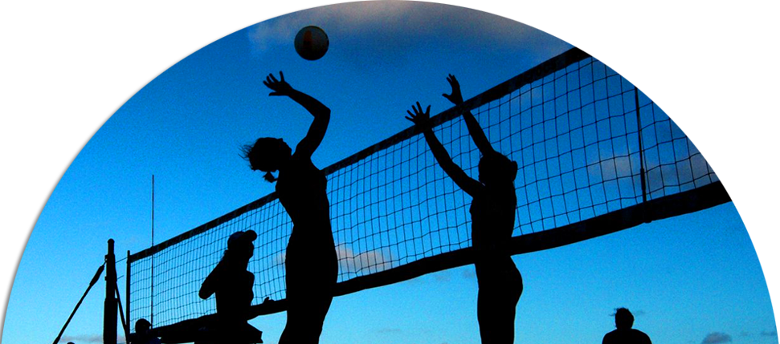

 VOLEYBOL SPORU
BRANŞIN FAYDALARI
Beyin ve diğer organların uyum içerisinde hareketini sağlaması açısından en uygun spor dalıdır.
Şiddet karşıtı bir spor dalı olması yanında, arkadaşlık edinmeyi sağlar.
Diğer spor dallarında olduğu gibi kişilere sorumluluk bilinci kazandırır.
Vücut yapısının düzgün bir şekle ve duruşa kavuşmasında oldukça yararlıdır.
Küçük yaştan itibaren oynayan çocuklarda, zamanın doğru kullanılması açısında oldukça öğreticidir.
Beslenme açısından da düzgün beslenme alışkanlığı sağlarken, sağlıklı beslenmeyi amaç edindirir.
Omurga yapısını kuvvetlendirir. Daha fazla yük binmesine mani olur.
Voleybol gelecekle ilgili planlama yaparak hayatımızın akışını kontrol altına almamıza katkı sağlar, öğrenme ve öğretme bilincimizi geliştirir.
Diğer spor dallarında olduğu gibi bu spor dalında da insanlığı kötü alışkanlıklardan uzak tutarken, insanlığa yarar sağlayan, alışkanlıklar edinmeyi amaç edinir.
Sağlık açısından nefes kontrolünün çok önemi vardır. Bu açıdan bu sporu yapanlar doğru nefes alıp vermeyi de öğrenmiş olur.
Birden fazla kişilerden kurulu takımlardan oluştuğu için sosyalleşmeye katkı sağlar.
Bu sporu yaparken yardımlaşma şarttır. Sahada yapılan yardımlaşma, normal yaşantımıza da yardımlaşma alışkanlığı katar.
Bu spor icra ederken tüm vücudu çalıştırdığı için vücudu ve yapısının esneklik kazanmasını sağlar.